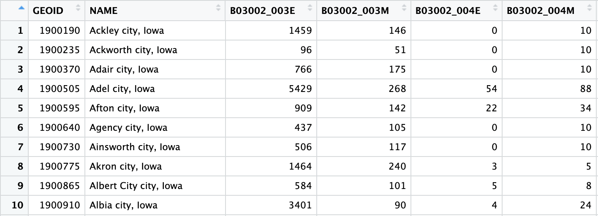
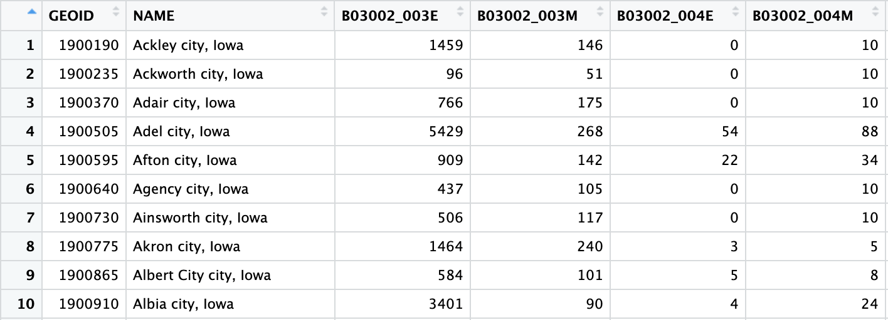

Week Goals
This week we continued our work in the Community Capitals project and we are specifically still looking into the social and cultural capital measurements and datasets. Our goal this week was to transform raw datasets we collected for the measurements we came up with and transformed them so that we can use it as one of our indicators in the final data visualization web app. We then also looked at couple of other datasets that were already finalized by Solomon and we try to do some data exploratory and visualizations with them.
Social and Cultural Capital Datasets
FBI Crime Reports
We worked with the FBI Crime Reports dataset which consisted all the crimes reported in the year of 2021 for all offenses. There are a total of fifty different offenses in the dataset, but we primarily focused on four which were classified as the most violent crimes:
- Murder: 11(Non-negligent)
- Forcible Rape: 20
- Robbery: 30
- Aggravated Assault: 40
We believed that these four in particular could be a strong measure for social capital. High rates of such crimes might indicate low levels of social cohesion, trust, and mutual aid among community members, which are key components of social capital.
The dataset initially consisted over 78 columns, with a lot of redundant columns but also followed a ‘wide’ format which was very hard to read, especially when trying to see the demographics on who committed the crime.
We then transformed this from a wide format to a long format, and we kept the total crime count for each offense in each county, as well as the crime count per 10k population. This way we have much less columns, and we can extract important crime information for each offense in each county much easier.
For most of our datasets, we are trying to follow a format where in each county level dataset we have all the 99 different counties in the ‘COUNTY’ column, this way, it is much easier when merging datasets for our final data visualization.
Social Capital Atlas
Along with the FBI Crime Reports dataset, we looked into Meta’s Social Capital Atlas dataset, a very cool website that shows the social engagement of a community on their social media platform.
Different measures for social capital in this dataset:
- Connectedness: How people with different characteristics and backgrounds are friends with each other, this is a clear example of bridging social capital.
- Cohesiveness: The degree to which friendship networks are clustered into cliques and whether friendships tend to be supported by mutual friends. This includes our clustering and support ratio measures.
- Civic Engagement: Indices of trust or participation in civic organizations. This includes our volunteering rate measure.
Economic Connectedness by County
Next week goal: We have the same dataset but by zip code instead and we would like to generate maps for each variable by zip code.
Iowa Public Library Statistics
We looked at the Iowa Public Library Statistics for the fiscal year 2023, July 1, 2022 - Jun 30, 2023. There were 514 Libraries in the dataset and each library was set to a size range. The main sections that we looked at were expenditures, programs and activities, services, and transactions. This will tell us how involved a community is to their public library.
Program and Activities
City Pop Size Prog1 Attend1 Prog2 Attend2 Prog3 Attend3 Prog4 Attend4 Prog5 Attend5 Prog6 Attend6 Num Programs per 10,000 People Num of Attend per Pop Total Kid Programs Num Kid Programs per 10,000 People Total Kid Programs Attend Num of Kid Programs Attend per 10,000 People
1 Ackley 1699 C 5 28 46 1106 0 0 68 379 12 441 131 1954 771.0418 1.1500883 51 300.17657 1134 6674.514
2 Adair 828 B 0 0 5 245 0 0 1 10 6 150 12 405 144.9275 0.4891304 5 60.38647 245 2958.937
3 Adel 6090 E 143 2638 37 719 33 397 327 1902 35 1635 575 7291 944.1708 1.1972085 180 295.56650 3357 5512.315
4 Agency 463 B 0 0 11 56 0 0 12 40 0 0 23 96 496.7603 0.2073434 11 237.58099 56 1209.503
5 Akron 1580 C 40 980 32 1353 4 72 55 407 25 878 156 3690 987.3418 2.3354430 72 455.69620 2333 14765.823
In this table we added columns to find out the number of programs and attendance per 10,000 people in each city. We also looked at just the kid programs. In this dataset kids are classified by the age range 0-5 and 6-11.
Services
City Pop Size Visits Visits Per Capita Internet PCs Internet Use Wireless Sessions Website Visits St. Ft. of Building Avg. Weekly Hours Open Visits Per 10,000 People Wireless Sessions Per 10,000 People Website Visits Per 10,000 People
1 Ackley 1699 C 11000 6.474397 4 520 4183 2203 5300 42 64743.97 24620.365 12966.451
2 Adair 828 B 1582 1.910628 2 146 319 290 3200 13 19106.28 3852.657 3502.415
3 Adel 6090 E 62001 10.180788 7 1543 11756 22079 18000 43 101807.88 19303.777 36254.516
4 Agency 463 B 1716 3.706263 4 13 966 612 357 43 37062.63 20863.931 13218.143
5 Akron 1580 C 18342 11.608861 5 802 2076 2747 2412 43 116088.61 13139.241 17386.076
In this table we were interested in the services that a library had for their community. We calculated the visits, wireless sessions, and website visits per 10,000 people.
2022 General Election Turnout
In the General Election Turnout dataset we were given information about election day, absentee, and active voters in Iowa counties.
Election Turnout
County Pop Election Day Voters Absentee Voters Total Voters Active Voters as of 11/8/2022 % Active Voter Turnout Inactive Voters as of 11/8/2022 % Total Voter Turnout % Total Absentee Voters Total Voters per 10,000 people Active Voters per 10,000 people Election Day Voters per 10,000 people Absentee Voters per 10,000 people
1 Adair 7479 2249 943 3192 4707 0.6781 719 0.5882 0.2954261 4267.950 6293.622 3007.087 1260.864
2 Adams 3680 1142 538 1680 2446 0.6868 378 0.5949 0.3202381 4565.217 6646.739 3103.261 1461.957
3 Allamakee 14046 3935 1915 5850 8423 0.6945 1424 0.5940 0.3273504 4164.887 5996.725 2801.509 1363.377
4 Appanoose 12279 3416 1319 4735 7434 0.6369 1450 0.5329 0.2785639 3856.177 6054.239 2781.986 1074.192
5 Audubon 5651 1746 739 2485 3691 0.6732 529 0.5888 0.2973843 4397.452 6531.587 3089.719 1307.733
In this table we calculated the total amount of voters per 10,000 people in each county. We also calculated the election day, absentee, and active voters per 10,000 people in each county.
Exploration of Arts, Events, and Race
We started to explore the dataset about art, events, and race in Iowa cities.
These two plots show you the relationship between the city population and the Historic Sites that are less than 100.
Map Exploration
This interactive map shows cities in Iowa with less than 100 historic sites per 10,000 people.

Museums
This image shows 100 cities in Iowa with the highest race Simpson Index.
These treemaps show 100 cities in Iowa that have the highest Simpson Index race and ancestry, art sites, historic sites, and museums.
3 ACS Datasets
Single Household Distribution across Cities
We started by collecting single household datasets from ACS
GEOID NAME B11003_010E B11003_010M B11003_016E B11003_016M
1 1900190 Ackley city, Iowa 10 9 41 28
2 1900235 Ackworth city, Iowa 0 10 8 8
3 1900370 Adair city, Iowa 0 10 8 9
4 1900505 Adel city, Iowa 0 15 61 73
5 1900595 Afton city, Iowa 1 3 15 12
6 1900640 Agency city, Iowa 0 10 22 24
Because of population differences between cities, we fetched the total number of households within cities from ACS and calculated proportions of single households in cities.
GEOID CITY B11003_010E B11003_010M B11003_016E B11003_016M estimate proportion_male proportion_female
1 1900190 Ackley 10 9 41 28 413 0.024213075 0.09927361
2 1900235 Ackworth 0 10 8 8 32 0.000000000 0.25000000
3 1900370 Adair 0 10 8 9 185 0.000000000 0.04324324
4 1900505 Adel 0 15 61 73 1525 0.000000000 0.04000000
5 1900595 Afton 1 3 15 12 245 0.004081633 0.06122449
6 1900640 Agency 0 10 22 24 135 0.000000000 0.16296296
Commuting Time to Work
From a bunch of datasets for means of transportations from ACS, we collected the dataset of people commuting to work over one hour every day.
GEOID NAME variable num_commuters moe
1 1900190 Ackley city, Iowa B08134_010 29 21
2 1900235 Ackworth city, Iowa B08134_010 0 10
3 1900370 Adair city, Iowa B08134_010 34 24
4 1900505 Adel city, Iowa B08134_010 23 35
5 1900595 Afton city, Iowa B08134_010 35 24
6 1900640 Agency city, Iowa B08134_010 2 4
Also because of the size differences, I collectd the total number of communters and then calculated the proportion of people commuting more than 1 hour to work.
GEOID CITY variable num_commuters moe estimate proportion
1 1900190 Ackley B08134_010 29 21 752 0.038563830
2 1900235 Ackworth B08134_010 0 10 50 0.000000000
3 1900370 Adair B08134_010 34 24 390 0.087179487
4 1900505 Adel B08134_010 23 35 2674 0.008601346
5 1900595 Afton B08134_010 35 24 500 0.070000000
6 1900640 Agency B08134_010 2 4 199 0.010050251
English Proficiency Dataset
English proficiency also contributes to how society is established, expresses and communicates ideas.
Also, to maintain good relativity to the city sizes, I calculate the proportions.
CITY proportion
1 Ackley 0.9660912
2 Ackworth 1.0000000
3 Adair 1.0000000
4 Adel 0.9799023
5 Afton 0.9630332
6 Agency 1.0000000
Merge Datasets together
These three datasets will be valuable to measurer the social capitals at the end and we just care about the proportions. So I perform a merge.
Race & Ancestry Diversity Dataset
Race and Ancestry are important measures for Cultural Capitals. I collected data about number of people with different races and ancestries within cities and merge them together.
 We then use Simpson Index to calculate the diversity within each city.
GEOID CITY SimpsonIndex_race SimpsonIndex_ancestry
1 1900190 Ackley 0.24674401 0.8196178
2 1900235 Ackworth 0.17250674 0.8134410
3 1900370 Adair 0.09779811 0.7921790
4 1900505 Adel 0.17635778 0.8601441
5 1900595 Afton 0.26618045 0.8464086
6 1900640 Agency 0.08874089 0.8409283
Cultural Datasets
We process to some visualizations for some of the measures for cultural capitals
Social and Cultural Capital Datasets
FBI Crime Reports
We worked with the FBI Crime Reports dataset which consisted all the crimes reported in the year of 2021 for all offenses. There are a total of fifty different offenses in the dataset, but we primarily focused on four which were classified as the most violent crimes:
We believed that these four in particular could be a strong measure for social capital. High rates of such crimes might indicate low levels of social cohesion, trust, and mutual aid among community members, which are key components of social capital.
The dataset initially consisted over 78 columns, with a lot of redundant columns but also followed a ‘wide’ format which was very hard to read, especially when trying to see the demographics on who committed the crime.
We then transformed this from a wide format to a long format, and we kept the total crime count for each offense in each county, as well as the crime count per 10k population. This way we have much less columns, and we can extract important crime information for each offense in each county much easier.
For most of our datasets, we are trying to follow a format where in each county level dataset we have all the 99 different counties in the ‘COUNTY’ column, this way, it is much easier when merging datasets for our final data visualization.
Social Capital Atlas
Along with the FBI Crime Reports dataset, we looked into Meta’s Social Capital Atlas dataset, a very cool website that shows the social engagement of a community on their social media platform.
Different measures for social capital in this dataset:
Economic Connectedness by County
Next week goal: We have the same dataset but by zip code instead and we would like to generate maps for each variable by zip code.
Iowa Public Library Statistics
We looked at the Iowa Public Library Statistics for the fiscal year 2023, July 1, 2022 - Jun 30, 2023. There were 514 Libraries in the dataset and each library was set to a size range. The main sections that we looked at were expenditures, programs and activities, services, and transactions. This will tell us how involved a community is to their public library.
Program and Activities
In this table we added columns to find out the number of programs and attendance per 10,000 people in each city. We also looked at just the kid programs. In this dataset kids are classified by the age range 0-5 and 6-11.
Services
In this table we were interested in the services that a library had for their community. We calculated the visits, wireless sessions, and website visits per 10,000 people.
2022 General Election Turnout
In the General Election Turnout dataset we were given information about election day, absentee, and active voters in Iowa counties.
Election Turnout
In this table we calculated the total amount of voters per 10,000 people in each county. We also calculated the election day, absentee, and active voters per 10,000 people in each county.
Exploration of Arts, Events, and Race
We started to explore the dataset about art, events, and race in Iowa cities.
These two plots show you the relationship between the city population and the Historic Sites that are less than 100.
Map Exploration
This interactive map shows cities in Iowa with less than 100 historic sites per 10,000 people.
![](imgs/Public_art_less.html{width=“600” height=“400”}
This interactive map shows cities in Iowa with less than 100 public art per 10,000 people.
Race
Ancestry
Art Sites
Historic Sites
Museums
This image shows 100 cities in Iowa with the highest race Simpson Index.
These treemaps show 100 cities in Iowa that have the highest Simpson Index race and ancestry, art sites, historic sites, and museums.
3 ACS Datasets
Single Household Distribution across Cities
We started by collecting single household datasets from ACS
Because of population differences between cities, we fetched the total number of households within cities from ACS and calculated proportions of single households in cities.
Commuting Time to Work
From a bunch of datasets for means of transportations from ACS, we collected the dataset of people commuting to work over one hour every day.
Also because of the size differences, I collectd the total number of communters and then calculated the proportion of people commuting more than 1 hour to work.
English Proficiency Dataset
English proficiency also contributes to how society is established, expresses and communicates ideas.
Also, to maintain good relativity to the city sizes, I calculate the proportions.
Merge Datasets together
These three datasets will be valuable to measurer the social capitals at the end and we just care about the proportions. So I perform a merge.
Race & Ancestry Diversity Dataset
Race and Ancestry are important measures for Cultural Capitals. I collected data about number of people with different races and ancestries within cities and merge them together.
 We then use Simpson Index to calculate the diversity within each city.
Cultural Datasets
We process to some visualizations for some of the measures for cultural capitals
Visualizations
Historic Sites
Arts
Museums
Monuments